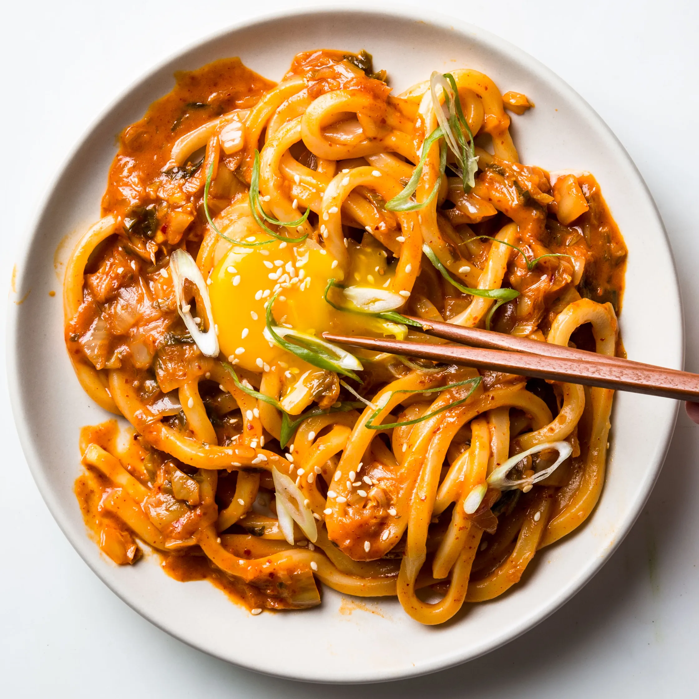

Kimchi Udon

Ingreadients
- 5 tablespoons unsalted butter, divided
- 1 cup finely chopped kimchi, plus 1/3 cup kimchi juice
- 2 tablespoons gochujang (Korean hot pepper paste)
- 1/2 cup low-sodium chicken broth
- 1 pound fresh or frozen udon noodles
- Kosher salt
- 4 large egg yolks, room temperature
- 3 scallions, white and pale-green parts only, thinly sliced on a diagonal
- 1 tablespoon toasted sesame seeds
Steps
- Heat 2 Tbsp. butter in a large skillet over medium-high. Add chopped kimchi and gochujang and cook, stirring occasionally, until kimchi is softened and lightly caramelized, about 4 minutes. Add broth and kimchi juice and bring to a simmer. Cook until liquid is slightly reduced, about 3 minutes.
- Meanwhile, boil noodles according to package directions.
- Using tongs, transfer noodles to skillet and add remaining 3 Tbsp. butter; cook, tossing often, until sauce coats noodles, about 2 minutes. Season with salt if needed. Divide among bowls and top with egg yolks, scallions, and sesame seeds.
Hopepage